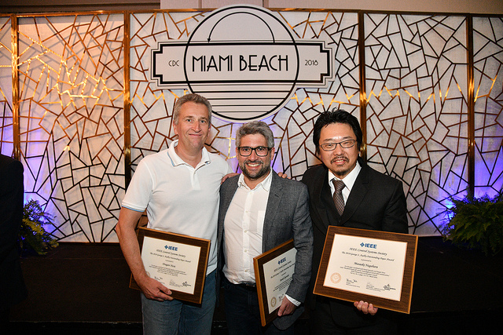

[English] [Japanese]
永原 正章
>
IEEE制御システム部門より国際賞 George S. Axelby Outstanding Paper Award を受賞しました！
（Dragan Nesic教授（左）, Daniel Quevedo教授（中）とともに）
略歴
愛媛県生まれ．2003年，京都大学大学院情報学研究科博士課程修了．博士（情報学）．
京都大学助手，助教，講師を経て，2016年より北九州市立大学環境技術研究所教授． また，同年よりインド工科大学ムンバイ校 (IIT
Bombay) の客員教授を兼任． 専門分野は制御理論と機械学習．IEEE制御システム部門より国際賞である Transition to
Practice Award（2012年） および George S. Axelby Outstanding Paper
Award（2018年）をそれぞれ受賞． そのほか，計測自動制御学会や電子情報通信学会の論文賞など， 受賞多数．IEEEの上級会員
(Senior Member)．著書に「スパースモデリング」（コロナ社，単著）や
「マルチエージェントシステムの制御」（コロナ社，共著，SICE著述賞受賞），「ネットワーク化制御」（コロナ社，共著）などがある．
[Curriculum Vitae]
 （←Linkedin のページ）
（←Linkedin のページ）
北九州市立大学 環境技術研究所
〒808-0135 北九州市若松区ひびきの1-1
研究室：ひびきのキャンパス本館 N421（地図リンク）
email： nagahara@kitakyu-u.ac.jp
研究内容の概略
ものを動かすための自動制御理論とものを考えるための人工知能を融合させた世界でも全く新しい理論の構築とその社会実装を研究の主な対象としています．
最近の人工知能の発展（第３次ブーム）により，人工知能は身近な存在となりました．
特に，音声や画像の認識や分類，ビッグデータ解析，IoT (Internet of Things) の枠組みにおけるエッジ・フォグコンピューティングなど，
まさに我々の周りをとりまく環境に人工知能の技術が自然に導入されています．
そのような人工知能の多くは，「ものの理解」を目指しています．すなわち，超高機能なセンサを作ろうとしていることになります．
いっぽう，人工知能による推論の結果をもとに環境に働きかけ，スマートにものを動かすためには，
高度に知能化されたアクチュエーションも必要となるでしょう．そのための基礎理論が自動制御理論なのです．
スマートなセンサ（人工知能）とスマートなアクチュエータ（自動制御）が組み合わさって初めて，スマートに動くものが作れます．
このような観点から当研究室では，世界でもきわめてユニークな「自動制御＋人工知能」の融合を目指した研究をすすめており，
特に動的スパースモデリングと呼ぶ基礎理論に関しては，世界でトップクラスの研究成果を発表し続けています．
キーワード
自動制御，人工知能，スパースモデリング，動的スパースモデリング，分散最適化，省エネルギー，マルチエージェントシステム，IoT (Internet of Things)，
サイバーフィジカルシステムズ (Cyber-physical Systems)，超スマート社会，環境技術
研究業績
業績リスト
Google Scholar Citations
ResearchGate
受賞
２０１８年，IEEE Control Systems Society George S. Axelby Outstanding Paper Award [new!]
２０１６年，計測自動制御学会著述賞
２０１５年，Automatica, Outstanding Reviewer
２０１５年，IEEE 関西支部 関西支部メダル
２０１４年，電子情報通信学会信号処理研究専門委員会SIP特別功労賞
２０１４年，IEEE Senior Member
２０１４年，電子情報通信学会通信ソサイエティ論文賞 (Best Tutorial Paper Award)
２０１２年，IEEE Control Systems Society Transition to Practice Award
２０１２年，計測自動制御学会学会賞（論文賞）
２００５年，Finalist of SICE Annual Conference Award (Yound Author's Award)
１９９９年，計測自動制御学会学術奨励賞
学会活動ほか
２０１９年〜現在，Asian Journal of Control, Associate Editor
２０１９年～現在，計装研究会，AI専門部会，顧問
２０１９年〜現在，第７回 計測自動制御学会，制御部門マルチシンポジウム，プログラム委員長
２０１９年〜現在，国際会議 The 6th Indian Control Cnference (ICC), International Program Committee Member
２０１９年〜現在，国際会議 ASCC2019，local committee member
２０１８年〜現在，IEEE Technical Committee on Networks and Communications, Member
２０１８年〜現在，計測自動制御学会，超スマート社会実現のためのシステム制御技術調査研究会，主査
２０１８年〜現在，計測自動制御学会，IoT時代に向けたイベントベースト制御調査研究会，副主査
２０１７年〜現在，SICE九州支部，事業幹事
２０１６年～現在，ひびきのAI社会実装研究会，委員
２０１５年～現在，SICE JCMSI Editorial Board，Associate Editor
２０１４年～現在，IFAC Technical Committee 2.1 Control Design, Member
２０１４年～現在，IEEE Signal Processing Society, Signal Processing Theory and Methods (SPTM) Technical Committee, Affiliate Member
２０１４年～現在，電子情報通信学会 高信頼制御通信研究専門委員会(RCC)，専門委員
２０１３年～現在，IEEE Control Systems Society Conference Editorial Board, Associate Editor
過去の活動はこちら
研究助成
JST 未来社会創造事業 超スマート社会の実現領域 探索研究（研究分担者），２０１７年度ー２０１８年度
科学研究費 国際共同研究加速基金（国際共同研究強化），２０１７年度ー２０１８年度
科学研究費 基盤研究（Ｂ），２０１５年度－２０１８年度
科学研究費 挑戦的萌芽研究，２０１５年度－２０１６年度
科学研究費 新学術領域研究（公募研究），２０１４年度－２０１５年度
大川情報通信基金 研究助成，２０１４年度
カワイサウンド技術・音楽振興財団 研究助成，２０１３年度
科学研究費 基盤研究（Ｃ），２０１２年度－２０１４年度
科学研究費 若手研究（Ｂ），２００４年度－２００６年度，２０１０年度－２０１１年度
日本学術振興会 特別研究員（ＤＣ２），２００２年度